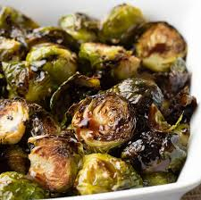

Brussel Sprouts

Brussel Sprouts have a bad rep.
But try this recipe and open your taste buds.
You won't regret it.
Recipes link to Brussel Sprouts
Glazed Brussel Spouts
- 8 slices bison bacon
- 2 pounds Brussels sprouts, trimmed and halved
- 1 tablespoon olive oil, or as needed
- 1 tablespoon butter
- 3 cloves garlic, minced
l
- ½ cup balsamic vinegar
- ½ teaspoon salt
- ⅛ teaspoon black pepper
Steps
- Clean and cut each sprout in half
- In a pan add butter then add sprouts
- Add garlic, balsamic vinegar, salt and pepper
- Cook until fork tender
- Cook bacon until crispy in another pan
- Add all together and enjoy
Home